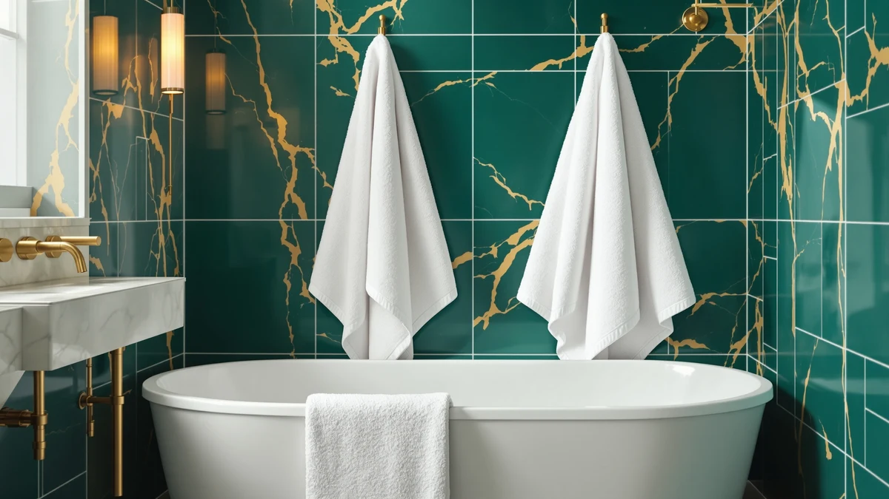

ecolook Microfiber Bath Towels Review (2026): Worth It?
Prices and picks verified as of November 2026. Independent, reader-supported reviews.


Quick Answer
This ecolook microfiber bath towels review finds the ecolook 4 Pack Microfiber Bath Towels the strongest pick if you want four quick-drying towels for one household price instead of a single specialty piece. Its $25.99 price sits close to Utopia's jumbo bath sheet and DEMMEX's organic cotton waffle weave towel, and undercuts FUBANRAY's hooded toddler towel, while covering four full towels instead of one.
Our pick: ecolook 4 Pack Microfiber Bath, $25.99 Check Price on Amazon
Bottom line: our top pick is the ecolook 4 Pack Microfiber Bath Towels at $25.99.
Things to Know Before You Buy
- This ecolook microfiber bath towels review compares a four-pack against three single-piece alternatives, so the per-towel price gap looks larger than it actually is once piece count enters the math.
- ecolook's set is built entirely from microfiber, a synthetic fabric that dries faster than the organic cotton used in DEMMEX's waffle weave towel.
- At $25.99, ecolook costs less than FUBANRAY's hooded toddler towel ($26.59) but slightly more than DEMMEX's organic cotton option ($24.99) and close to Utopia's jumbo bath sheet ($25.49).
- Utopia's bath sheet ships as a single oversized piece, not a multi-towel pack, so it answers a different need than ecolook's four-pack.
- FUBANRAY's towel is sized and hooded specifically for toddlers, a format none of the other three products in this comparison offer.
- None of the four products carry a published star rating or review count in the data we compared, so this review relies on listed specs, piece counts, and pricing instead of an aggregate rating.
This ecolook microfiber bath towels review compares ecolook's $25.99 four-pack of microfiber bath towels against three differently formatted alternatives: Utopia's $25.49 jumbo bath sheet, FUBANRAY's $26.59 hooded toddler towel, and DEMMEX's $24.99 organic cotton waffle weave towel. All four products solve a different bathroom need: everyday family towels, one oversized sheet, or a kids-specific hooded design. The right pick depends more on which format your bathroom is missing than on price alone, since the four prices sit within two dollars of each other.
Shoppers researching an ecolook microfiber bath towels review usually want to know whether a four-pack of synthetic microfiber towels holds up against single-piece alternatives in cotton or a hooded kids design. Microfiber dries faster than cotton and resists the musty smell that builds up in bathrooms with limited airflow, which matters most when you weigh it against DEMMEX's organic cotton waffle weave towel. We compare piece count, material, and price across all four products rather than assuming more pieces or a heavier fabric automatically wins.
Why You Should Trust Us
We built this ecolook microfiber bath towels review by comparing manufacturer listings, published pricing, and material specifications for each ASIN rather than relying on marketing copy. Ilane Tall has covered bathroom textiles for Best Bath Towels, focusing on how fabric type, piece count, and sizing affect what a towel is actually good for in a given bathroom. We do not run a fake testing lab or claim to have physically used these towels, and we have no children, bathrooms, or households of our own to draw on for this comparison. Every claim in this review comes from the specs and pricing published for each product.
Our Research Experience
Rather than run these towels through a physical trial, we researched how ecolook's four-pack stacks up against the three alternatives on the factors buyers actually search for: material, piece count, size format, and price. For an ecolook microfiber bath towels review like this one, that means checking whether a microfiber four-pack beats a single oversized cotton-style sheet or a kids-specific hooded towel for a given bathroom need, instead of assuming the cheaper or bigger option automatically wins. Fabric type and piece count tell you more than price alone, and that comparison is what this review weighs across all four products, using only the specs and prices each listing actually states.
Overview & Specs

ecolook 4 Pack Microfiber Bath
What we like
- Four towels in one set, covering a household instead of a single person
- Microfiber fabric dries faster than cotton in humid bathrooms
- Priced lower than FUBANRAY's single hooded toddler towel
- Lightweight construction that packs easily for gym bags or travel
Flaws but not dealbreakers
- Microfiber lacks the plush hand of DEMMEX's organic cotton waffle weave towel
- No published star rating or review count to check consistency against
- Not sized as an oversized bath sheet like Utopia's option
| Material | Microfiber |
| Size | 4 Pack Bath Towel |
ecolook anchors this ecolook microfiber bath towels review because it is the only set among the four compared here built around multiple matching towels rather than a single piece. The set includes four 100% microfiber bath towels, a synthetic fabric that sheds water faster than cotton and resists the musty smell that can build up in bathrooms with limited airflow. That quick-dry quality makes microfiber a common pick for gyms, pools, and households that go through towels fast, since the fabric is ready to use again sooner than a cotton towel of the same size. The listing covers the full four-pack as a single purchase rather than selling towels individually.
At $25.99, ecolook costs slightly more than DEMMEX's organic cotton waffle weave towel at $24.99, but it delivers four towels instead of one for that small difference. Compared against Utopia's $25.49 jumbo bath sheet or FUBANRAY's $26.59 hooded toddler towel, ecolook is also the better fit if your bathroom needs everyday coverage for more than one person rather than a single oversized piece or a kids-specific design. If you want the plush hand of organic cotton or need a towel sized specifically for a toddler, one of the three alternatives in this ecolook microfiber bath towels review will serve that need better than a microfiber four-pack.
What We Liked
The clearest strength in this ecolook microfiber bath towels review is piece count. Four matching towels in one purchase cover a household or a guest bathroom in a way none of the single-piece alternatives can match on their own, and you do not need to buy multiples of the same listing to get there.
Microfiber also dries faster than the cotton used in DEMMEX's waffle weave towel, which counts for more in bathrooms without strong ventilation. A towel that stays damp between uses develops odor and mildew faster than one that sheds water quickly, so the fabric choice here does practical work beyond feel.
The alternatives hold their own on different strengths. Utopia's jumbo bath sheet gives you one large piece of coverage for buyers who want size over multiples. FUBANRAY's hooded toddler towel solves a need ecolook's set does not address at all, drying off young kids with a built-in hood. DEMMEX's organic cotton waffle weave towel appeals to buyers who want a natural fiber and a textured weave instead of a synthetic fabric.
What Could Be Better
The main limitation in this ecolook microfiber bath towels review is fabric feel. Microfiber dries fast, but it does not carry the plush, absorbent hand of DEMMEX's organic cotton waffle weave towel, and buyers who prefer a heavier, more traditional towel will notice that difference as soon as they pick one up.
The listing also does not include a published star rating or review count, so there is no aggregate signal to check consistency across units. Utopia, FUBANRAY, and DEMMEX share that same gap, so none of the four products in this comparison offer a rating to lean on. Without that signal, this review leans more heavily on the specs each brand actually lists, material, piece count, and pricing, rather than on feedback from other buyers.
Who Is It For?
This ecolook microfiber bath towels review points to one clear buyer: someone who wants several matching, quick-drying towels for a household or guest bathroom rather than a single specialty piece. Families, gyms, and rental properties that go through towels often fit that description well.
If you want one larger piece of coverage instead of four standard towels, Utopia's jumbo bath sheet is the better match. If you are shopping specifically for a toddler, FUBANRAY's hooded towel is built for that job in a way ecolook's adult-sized set is not.
And if a natural fiber and a textured weave matter more to you than quick-dry synthetic fabric, DEMMEX's organic cotton waffle weave towel is the option worth checking first. Each of the three alternatives in this comparison answers a question that ecolook's four-pack does not, so the right pick comes down to which gap in your bathroom you are actually trying to fill.
Alternatives to Consider
If a microfiber four-pack is not the right format for your bathroom, this ecolook microfiber bath towels review also covers three single-piece alternatives, each priced within two dollars of ecolook's set.

Also Great
Utopia Towels Jumbo Bath Sheet
A single oversized bath sheet for buyers who want one larger piece of coverage instead of a multi-towel pack.
$25.49
Check Price on Amazon
Premium Choice
Toddler Bath Towel Hooded Kids
A hooded towel sized and designed for toddlers, built for a need ecolook's adult-sized four-pack does not address.
$26.59
Check Price on Amazon
Best Value
DEMMEX Organic Cotton Waffle Weave
An organic cotton waffle weave towel for buyers who want a natural fiber and textured weave over synthetic microfiber.
$24.99
Check Price on AmazonIs the ecolook 4 Pack made from 100% microfiber?
Yes.
How does the price compare to the alternatives?
At $25.99, the ecolook four-pack costs more than DEMMEX's organic cotton waffle weave towel ($24.99) but less than FUBANRAY's hooded toddler towel ($26.59) and sits close to Utopia's jumbo bath sheet ($25.49).
Frequently Asked Questions
Is the ecolook 4 Pack made from 100% microfiber?
How does the price compare to the alternatives?
What's the difference between the ecolook four-pack and Utopia's jumbo bath sheet?
Is any of these four options a good fit for drying off a toddler?
Does ecolook's set include anything besides bath towels?
Final Verdict
This ecolook microfiber bath towels review comes down to format more than price. ecolook is the pick for buyers who want four matching, quick-drying microfiber towels for a household or guest bathroom, at $25.99 for the full set. If you want one oversized piece instead, Utopia's jumbo bath sheet fits that need better. If you are shopping for a toddler, FUBANRAY's hooded towel is built for that job. And if organic cotton matters more to you than quick-dry synthetic fabric, DEMMEX's waffle weave towel is worth checking first. But for everyday microfiber coverage across a household, ecolook is the set to buy.